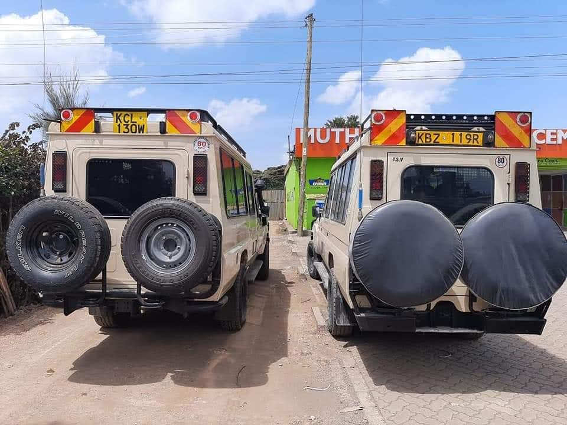

WELCOME TO NGARE-MARA TOURS & TRAVEL AGENCY
A tradition of excellence.

.jpg)
We offer Tours to destinations such as Mombasa where you get to see the beautiful culture of the Kenyan people, the beautiful Indian Ocean , pre-historic sites and the beautiful scenary that the place has to offer
Apart from that, we also offer tours to the vast Maasai Mara that is full of beautiful wild animals from the common Big 5 to a variety of bird species. The Maasai-Mara is home to various wildlife
.jpeg)
We also take tourists to explore different places such as Samburu, Tsavo, Amboselli, Hells gate in Nakuruand many more parks , and pre-historic as well as the historic sites that are in kenya. Apart from thet, we also offer tours outside kenya in Tanzania's Serengeti plains, and the exploration of the Ruwenzori Mountains in Uganda
.jpeg)
We guarantee the saftey of our clients during the tours as our fleet of vehicles are well maintained and serviced so as to ensure the saftey, comfortability and their reliance to the task at hand. Our well trained drivers and tour guides ensure that you get the maximum out of your visit to the various destinations that you decide to go to.